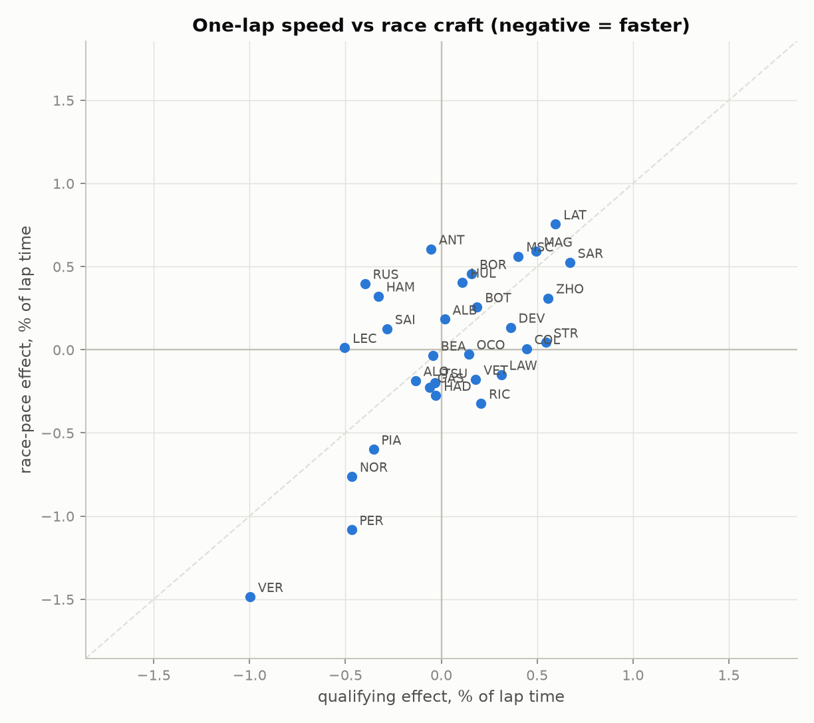

Isolating Driver Skill in Formula 1
A two-channel Bayesian hierarchical model that separates a driver's true pace from the car beneath them, across the 2022–2025 ground-effect era. Built on 64,745 clean racing laps and 1,429 qualifying laps — 31 drivers, 92 Grand Prix weekends — and validated against teammate head-to-head pace (r = 0.92). The headline: Verstappen at −1.24% of lap time versus the average driver, a class of one.
Read the full writeup →